Projelerim
Bebek Ağlama Analizi
0-2 yaş arası bebeklerin ağlama seslerini yapay zeka modeli ile sınıflandıran ticari bir mobil uygulama.
Flutter, Python, Firebase
Yorum Analizi – NLP
150.000 yorumla eğitilmiş doğal dil işleme modeli ile yorumları olumlu/olumsuz olarak sınıflandıran sistem.
Python, NLP, Tokenization
Beyin İnme Tespiti ve Segmentasyonu
MR görüntüleri ile inme varlığını tespit edip segmente eden Slicer eklentisi tabanlı derin öğrenme sistemi.
MONAI, Slicer, Python, Keras
Otopark Sayaç Uygulaması
Görüntü işleme ile boş park yeri tespit eden Python tabanlı masaüstü uygulama.
Python, OpenCV, Tkinter
Sınır Koruma Projesi
Görüntü işleme ve nesne tespiti ile belirli alanları izleyip ihlallere uyarı sistemi oluşturan proje.
YOLOv8, OpenCV, Python
İnsan Poz ve Hareket Tespiti
Mediapipe ve görüntü işleme ile insan hareketlerini algılayan deneysel bir proje.
Python, Mediapipe, NumPy
Uyku Tespiti
Sürücülerin göz, yüz ve baş hareketlerine göre uykulu olup olmadığını tespit eden sistem.
Python, OpenCV, Facial Landmark
Kütüphane Takip Sistemi
Kütüphanedeki kitap, kullanıcı ve ödünç alma işlemlerini takip eden küçük çaplı bir sistem.
Python, Tkinter, SQLite
Öğrenci Bilgi Sistemi
Öğrencilerin not, devamsızlık ve genel durumlarını takip eden mini veri tabanı projesi.
Python, SQLite, GUI
 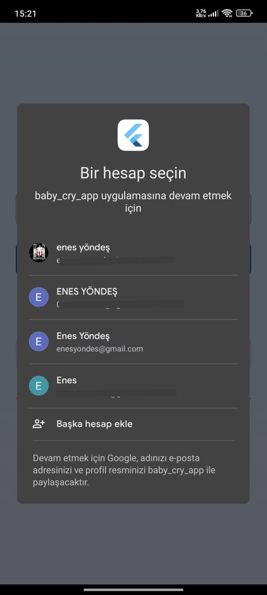
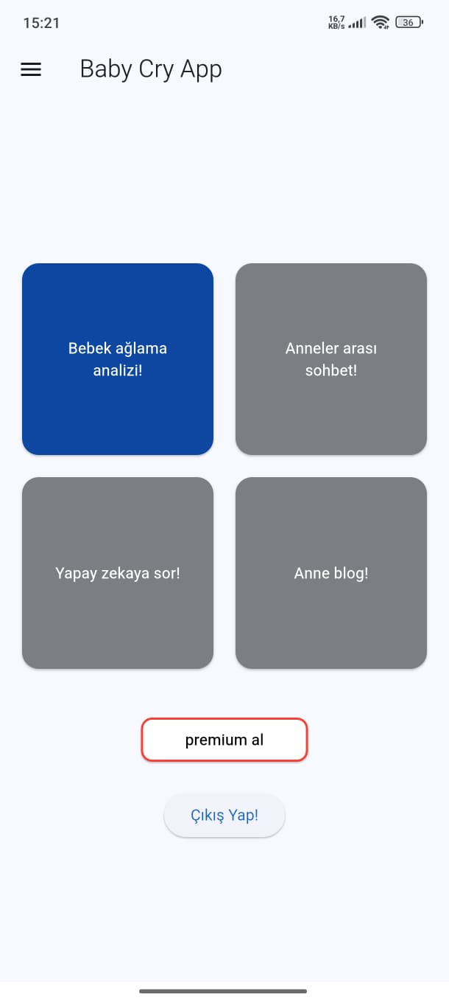
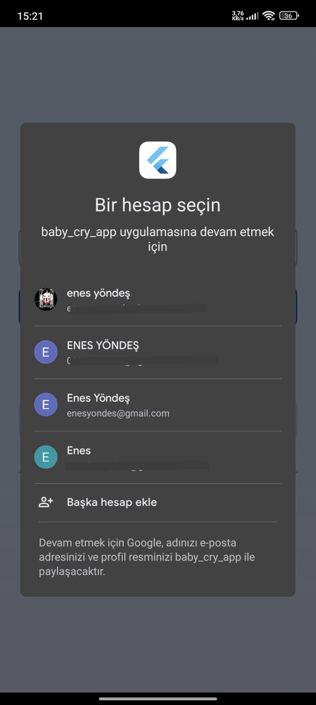
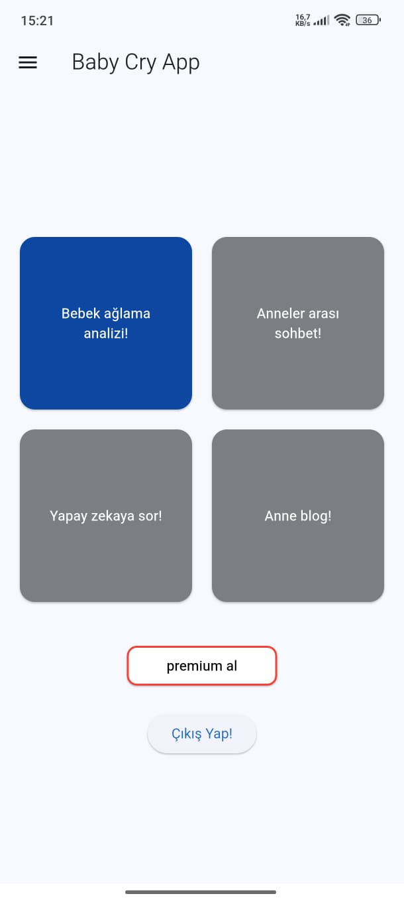


 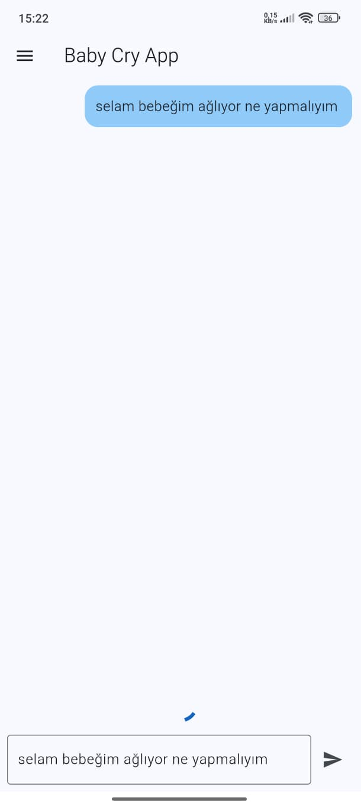
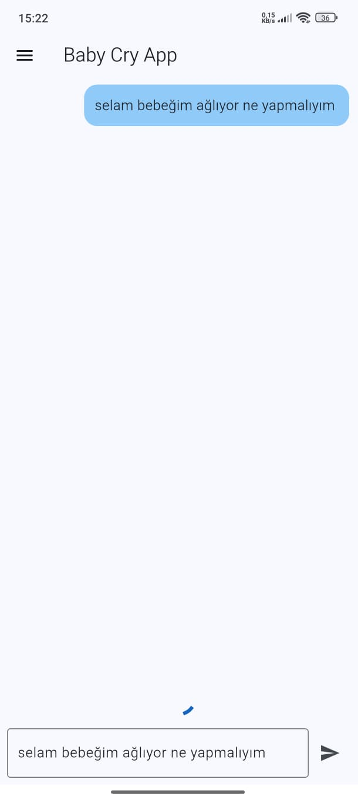

 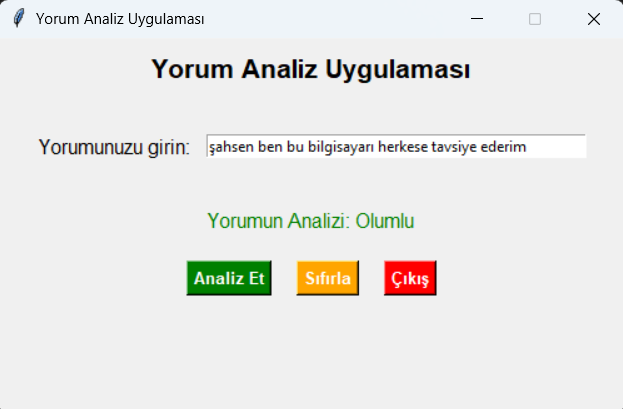
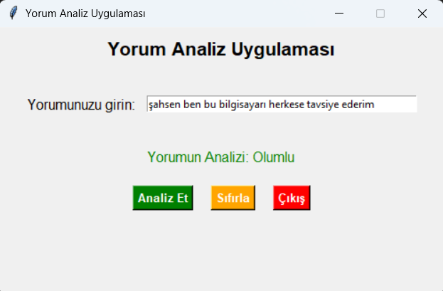


 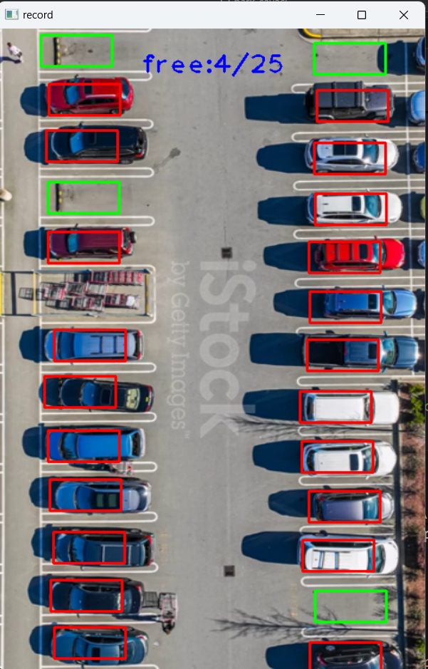
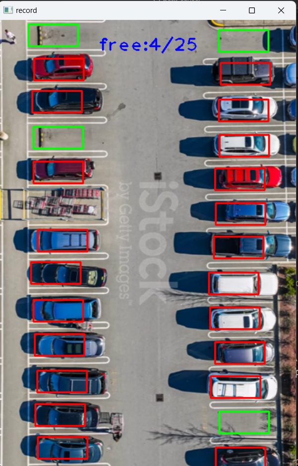


 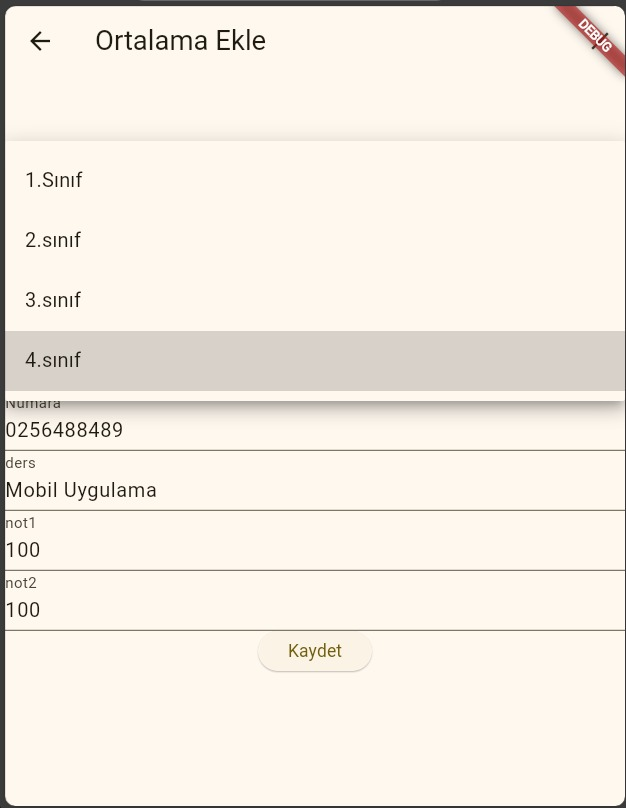
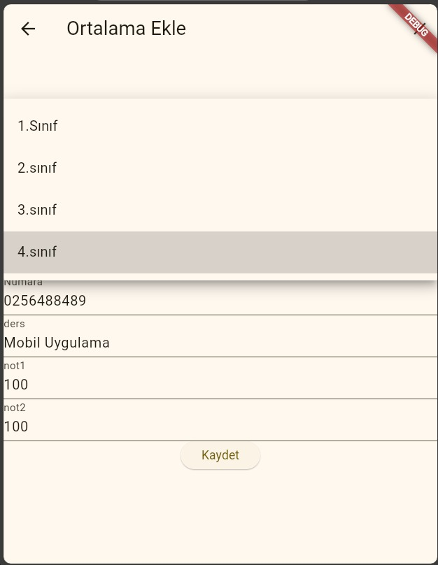

 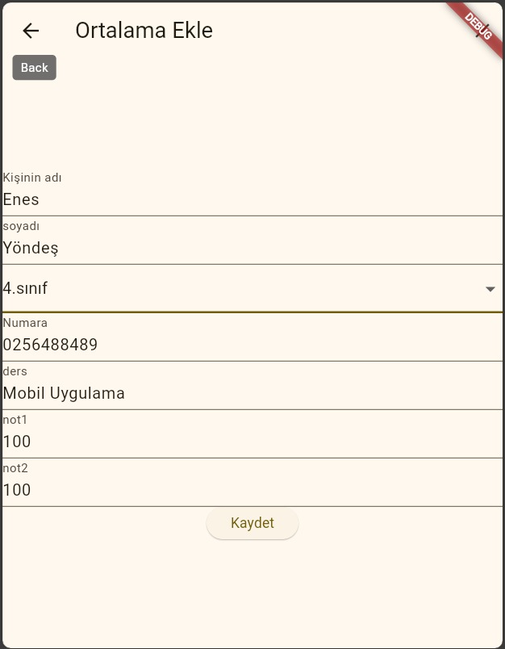
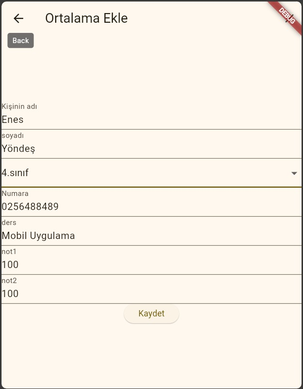